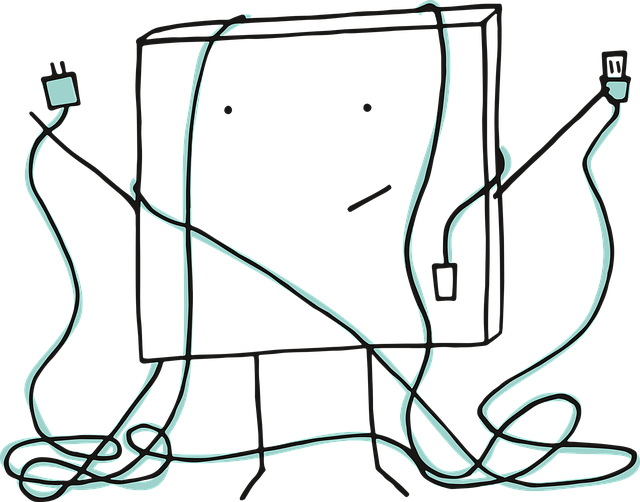

<!-- An HTML page for the not-found component with an image and a button to return to the home page -->

<div class="container">
  <br /><br />
<h2>Oops!  Looks like something went wrong . . .</h2>
<br /><br />

<br /><br /><br />
<button mat-raised-button color="primary" class="button" routerLink="/">Return to Home</button>
</div>
